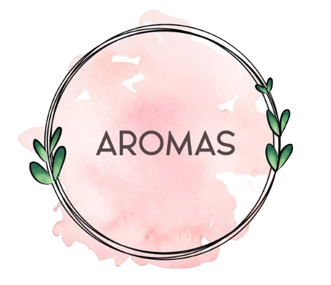
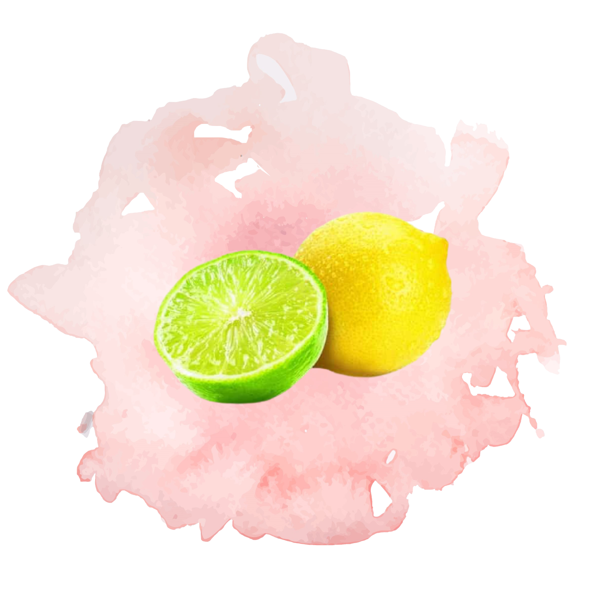
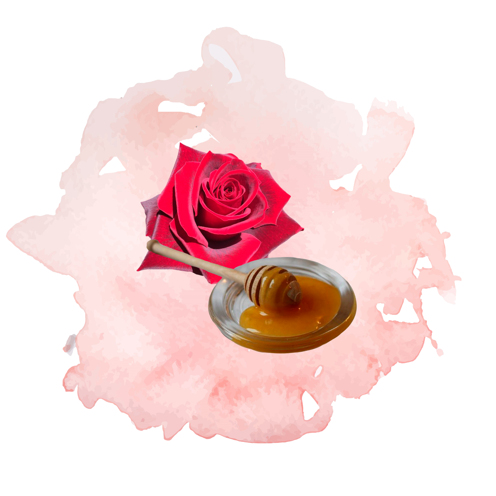

Las velas aromáticas ayudan a mejorar la calidad de vida, estimular el buen humor, regular el funcionamiento de los órganos internos, fortalecer el apetito e incluso te ayudan a entrar en calor de hogar, conectándote fácilmente con otras personas.


